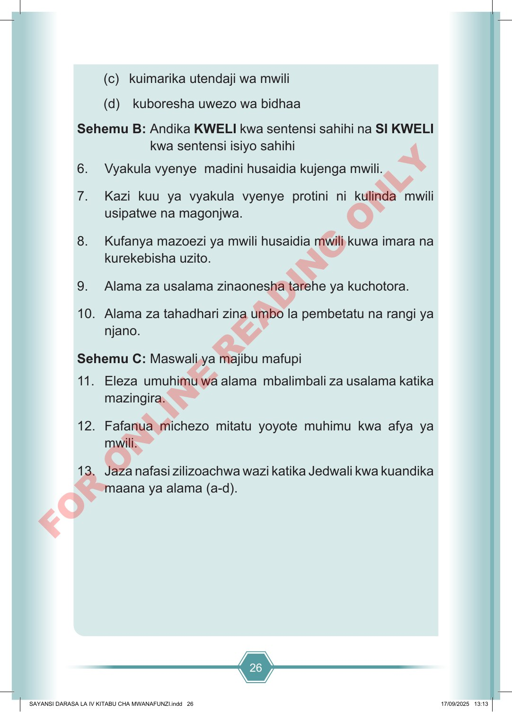

26 (c) kuimarika utendaji wa mwili (d) kuboresha uwezo wa bidhaa Sehemu B: Andika KWELI kwa sentensi sahihi na SI KWELI kwa sentensi isiyo sahihi 6. Vyakula vyenye madini husaidia kujenga mwili. 7. Kazi kuu ya vyakula vyenye protini ni kulinda mwili usipatwe na magonjwa. 8. Kufanya mazoezi ya mwili husaidia mwili kuwa imara na kurekebisha uzito. 9. Alama za usalama zinaonesha tarehe ya kuchotora. 10. Alama za tahadhari zina umbo la pembetatu na rangi ya njano. Sehemu C: Maswali ya majibu mafupi 11. Eleza umuhimu wa alama mbalimbali za usalama katika mazingira. 12. Fafanua michezo mitatu yoyote muhimu kwa afya ya mwili. 13. Jaza nafasi zilizoachwa wazi katika Jedwali kwa kuandika maana ya alama (a-d). SAYANSI DARASA LA IV KITABU CHA MWANAFUNZI.indd 26 SAYANSI DARASA LA IV KITABU CHA MWANAFUNZI.indd 26 17/09/2025 13:13 17/09/2025 13:13 F O R O N L I N E R E A D I N G O N L Y